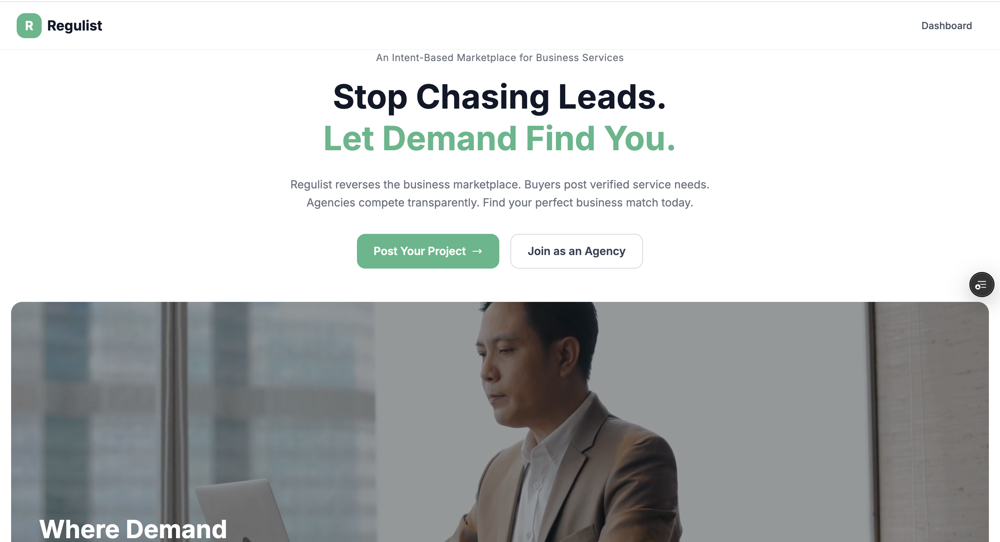
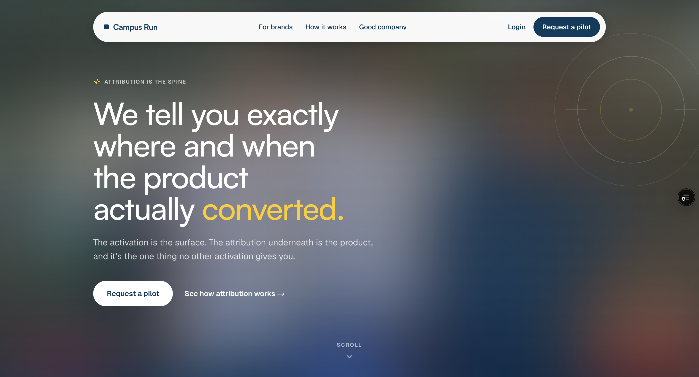
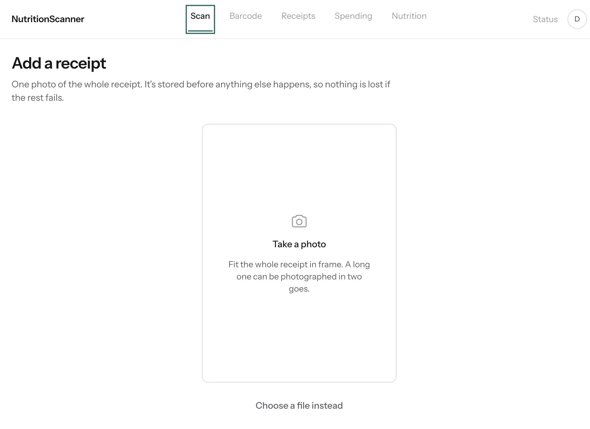
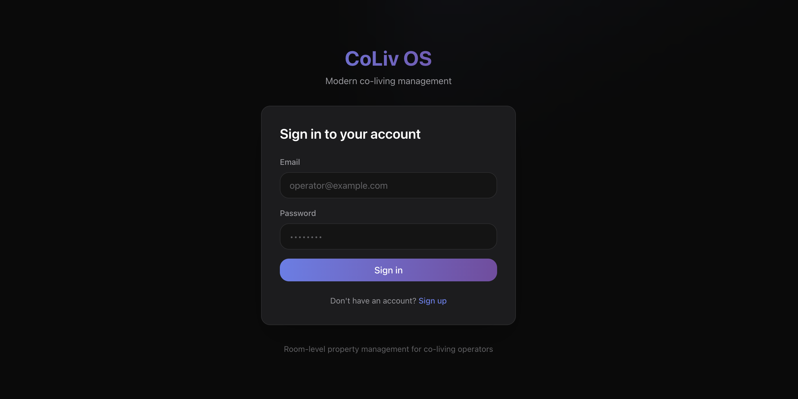
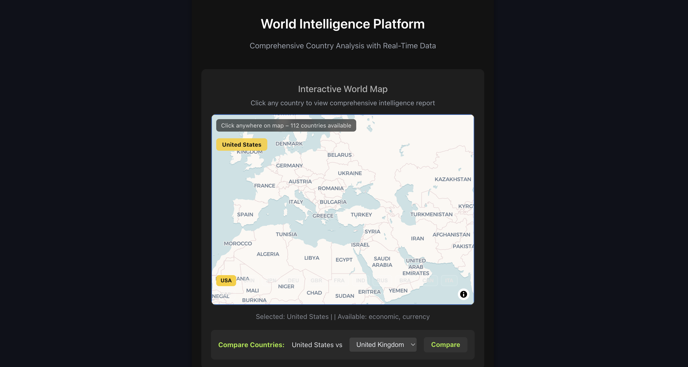
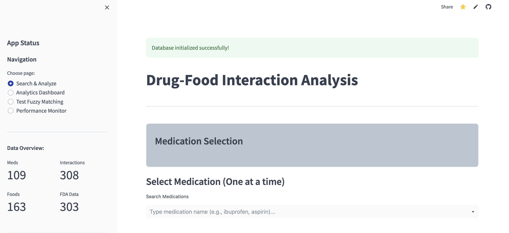
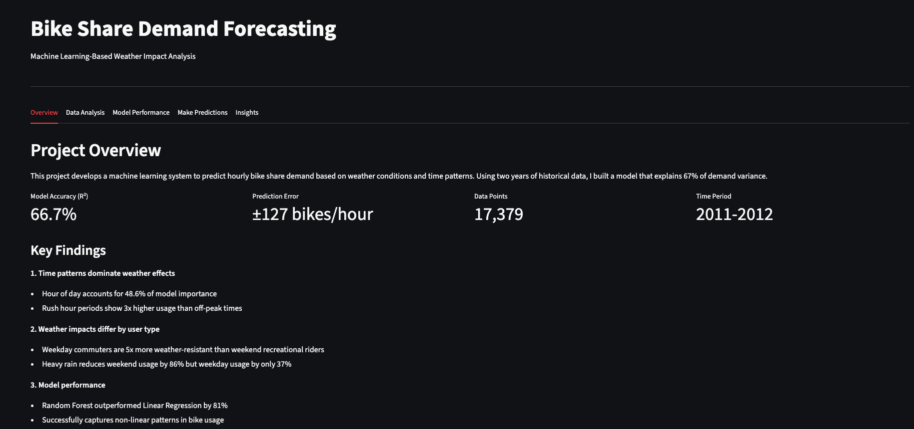
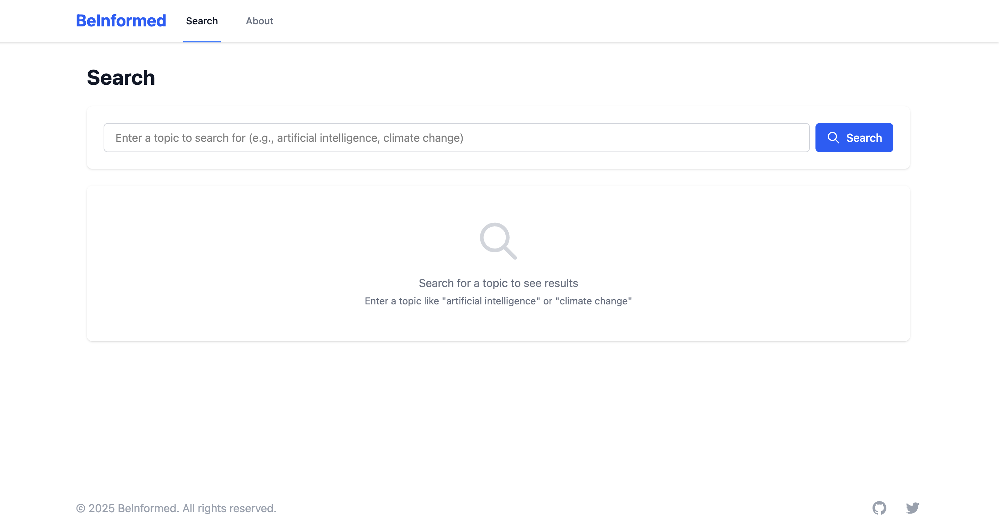

My Projects
A collection of full-stack applications showcasing AI integration, data analysis, and modern web development. Each project demonstrates real-world problem-solving and technical expertise.

RegulistRegulist
B2B Freelance Marketplace Platform
A full-stack B2B marketplace built single-handedly, with dual buyer/seller portals, a tiered Stripe Connect payout system, and a contract engine supporting one-time, installment, and milestone payment schedules — each with mutual signing workflows, automated billing jobs, and an admin portal with TOTP MFA. Now in launch phase with 20 agencies and 75 businesses on the pre-launch waitlist.

Campus RunCampus Run
Attribution Platform for Live Brand Activations
Sole engineer on a four-person startup, owning the entire production stack behind measured brand activations on college campuses. Implements Apple's PassKit Web Service protocol end to end — cryptographically signed per-card wallet passes, authenticated device callbacks, and a five-stage attribution funnel on an append-only event store — so a tap at a physical table traces through to an in-store redemption. Built for hostile field conditions at 1,000–3,000 taps in a 3–4 hour window, and shipped across three brand activations on five-figure client contracts.

NutritionScannerNutritionScanner
Receipt-to-Nutrition Analysis Pipeline
A full-stack pipeline that turns a photographed grocery receipt into structured food and price data, pairing Claude vision extraction with a held-out-evaluated LLM resolver, USDA nutrition lookup, and barcode-level ingredient hazard ratings — with a permanent correction loop that compounds across receipts, arithmetic reconciliation that flags any basket whose lines don't sum to its printed total, and two-tier spend guards that keep an open-signup deployment from draining a shared API budget.
No signup — the sign-in screen has a "Look around the demo" button that opens a real account with real receipts in it.

CoLivCoLiv
Co-Living Property Management Platform
A comprehensive dual-portal system for co-living operators and tenants, featuring room-level management with individual pricing, tenant profiles, and a roommate matching system built on tenant preference data and a scikit-learn compatibility algorithm. Models concurrent leases and staggered end dates within a single unit, tracking properties, units, and rooms with full operational visibility.

BrieflyGlobal
World Intelligence Platform
A comprehensive geopolitical intelligence platform featuring an interactive world map that integrates real-time economic data and news feeds. Built with AI-powered sentiment analysis and bias detection to provide automated insights into global events.

DietRx Enhanced
Drug-Food Interaction Analysis Platform
A clinical decision support system that integrates FDA OpenFDA data with AI-enhanced analysis to identify and classify drug-food interactions. Features professional PDF reporting and interactive analytics dashboards.

Bike Share Demand Forecasting
Machine Learning Predictive Analytics
A Random Forest ML system for predicting hourly bike share demand based on weather conditions and temporal patterns. Achieves 67% prediction accuracy with actionable insights for operational optimization.

BeInformed
Media Bias & Sentiment Analysis Platform
A full-stack application that analyzes news articles for sentiment, political bias, and factual reporting using advanced NLP models. Helps users compare perspectives across different news sources with interactive visualizations.